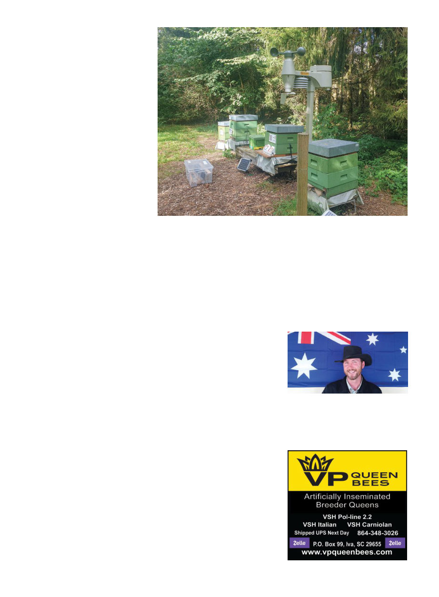

American Bee Journal
1318
he decided he should get more seri-
ous about it and corresponded with
Brother Adam in the U.K., who in-
vited him to come over to talk to him
about it, so he did, in 1975. That was
the beginning of a lifelong friendship,
which may have seemed very odd,
the monk being friends with “a long
haired hashesh smoking guy like me,”4
but somehow it worked. In 1978 he
brought his first Buckfast queens from
Brother Adam’s U.K. operation back to
Denmark. Today he says 80-90% of the
bees in Denmark are Buckfast bees.
“It’s a piece of cake to produce
queens, but not so easy to make good
queens,” he says. Denmark is the only
country in the world with legally
protected breeding areas, according
to Brandstrup. He is able to do his
breeding on three islands where no
one else is allowed to have bees. They
have a 60-day queen-breeding season.
They used to have real problems
with nosema but they decided they’d
never breed from a hive that had any
signs of nosema and that eliminated
it entirely after a few years. I asked if
they tried to do anything with varroa
resistance and he said no, they just
treated with flumethrin in August
and oxalic in January. “The most im-
portant thing about varroa is to stay
on top of it. If you get behind you’ve
already lost.”
Shortly later a Danish extension of-
ficer told me that sadly this has been
the attitude in Denmark, just treat
with the chemicals by the calendar.
When asked about the future, he
said due to climate change they’re
going to have to breed bees that
can withstand higher temperatures,
and “we only have three breeders in
all of Europe and we’re all the wrong
side of 70.”
Next we went to the nearby prop-
erty of Danish extension officer Flem-
ming Vejsnæs who had many hives
enrolled in all sorts of experiments,
which we had fun seeing. His prop-
erty had a sort of mystic quality of
being walled in by thick forest but
itself was full of flowering gardens
with the beehives here and there
throughout, altogether giving the
feeling of being in an enchanted glen
— one in which enterprising gnomes
are hooking all kinds of technological
innovations to beehives!
Finally we proceeded to the also-
nearby headquarters of the Danish
Beekeeping Association, which shares
a very nice building with some other
agricultural associations. There they
laid out a genuine Danish smorgas-
bord for us that was very delicious.
Fellow extensionist Geoff Williams of
Auburn University and I enjoyed pok-
ing around the extension office there
and looking at the numerous informa-
tional booklets that look very good,
though they’re in Danish!
Altogether we had a very lovely
time in Copenhagen and at Api-
mondia. The Scandinavian beekeep-
ers were incredibly welcoming and
friendly, and the city was beautiful,
safe, comfortable and full of sites of
historical interest. All the beekeepers
I’ve asked for feedback about the con-
ference have said it was great and they
learned many useful things. I strongly
encourage you to consider attending a
future Apimondia conference.
Another 27 and a half hours via Vi-
enna and Bangkok and we were back
in Melbourne pushing through freez-
ing sideways rain to find our car in
the airport carpark.
Just a few days later, on October 2,
Jeff Pettis formally stepped down as
president of Apimondia after six years
in that role, citing doctor’s advice and
obligations to family. He had begun
volunteering with Apimondia in 1999
and his leadership of the organization
has clearly been very well thought of.
References
1. The number mentioned at closing cer-
emonies was 121 but an official letter
that came after, mentioning Jeff Pettis'
resignation, said 144 countries were rep-
resented.
2. Coallier, N., et al., “Poor air quality raises
mortality in honey bees, a concern for all
pollinators.” Communications Earth and
Environment (2025)6:126 https://doi.
org/10.1038/s43247-025-02082-x
3. Grander, B.L., (2025, Sept 26th) “The
Good the Bad, and the Ugly: Insights
and Ternds from a 20-year natural selec-
tion experiment on disease resistance in
Gotland, Sweden” [presentation] 49th
Apimondia Conference, Copenhagen,
Denmark
4. Brandstrup, K., (2025, Sept 28th) [presen-
tation to group of Finns] Sorø, Denmark
Kris Fricke, originally from Southern Califor-
nia, is formerly Editor of The Australasian Bee-
keeper, and currently Senior Varroa Develop-
ment Officer in the Australian state of Victoria.
Danish extensionist Flemming Vejsnæs's very well-monitored bees